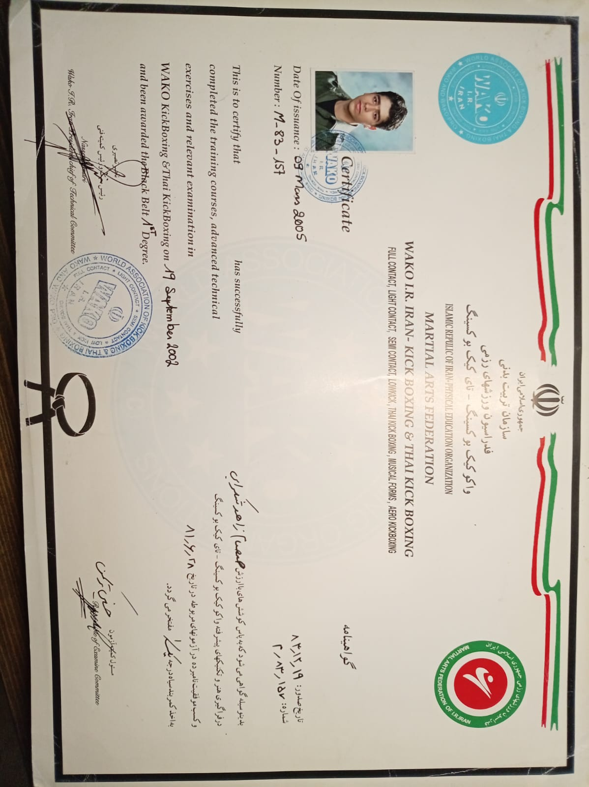

Samsam Zahed
Shekarabi
Experienced kickboxing coach and martial artist with 12+ years of coaching experience, 5th Dan in kickboxing, and a long-standing background in combat sports training and athlete development.
Photo will be added here
About
My martial arts journey began with karate at the age of eight and continued through Top Karate, kickboxing and judo. My coaching focuses on practical technique, self-defense, fighting tactics, opponent analysis and preparation for combat performance.
Coaching Experience
Vanak Club · Tehran
Kickboxing Coach · approximately 14 athletes
Kickboxing, self-defense, fighting tactics, opponent analysis and athlete preparation. Coaching paused during COVID-19.
Saba & Soheil Club · Tehran
Kickboxing Coach · approximately 2 years · approximately 9 athletes
Technical training, self-defense, tactics, opponent analysis and combat preparation.
Independent Coaching · Tehran
Post-COVID training until relocation to Finland in 2023
Continued outdoor and park-based coaching and athlete training.
Credentials & Achievements
Kickboxing Rank
5th Dan — Kickboxing
Current rank registered with the Iranian Martial Arts Federation.
WAKO Qualification

WAKO Kickboxing & Thai Kickboxing · examination completed 19 September 2002 · certificate issued 9 March 2005.
Technical Certificate
WAKO Kickboxing — 3rd Grade Black Belt
Iranian Martial Arts Federation · Tehran · 2008 certificate.
Coaching Qualification
Level 2 Coach
Iranian Martial Arts Federation.
Competition
3rd Place — National Team Selection Competition
Selected in connection with the national team pathway for the World Championships in Morocco. Official certificate to be added.
International Conference
Logical Reaction to the Hits Based on Subconscious System
Japanese Academy of Budo International Conference, Japan · 2017 · Submission C000007 · accepted presentation / Letter of Acceptance.
Coaching Focus
Contact
For coaching opportunities, collaborations and professional enquiries.